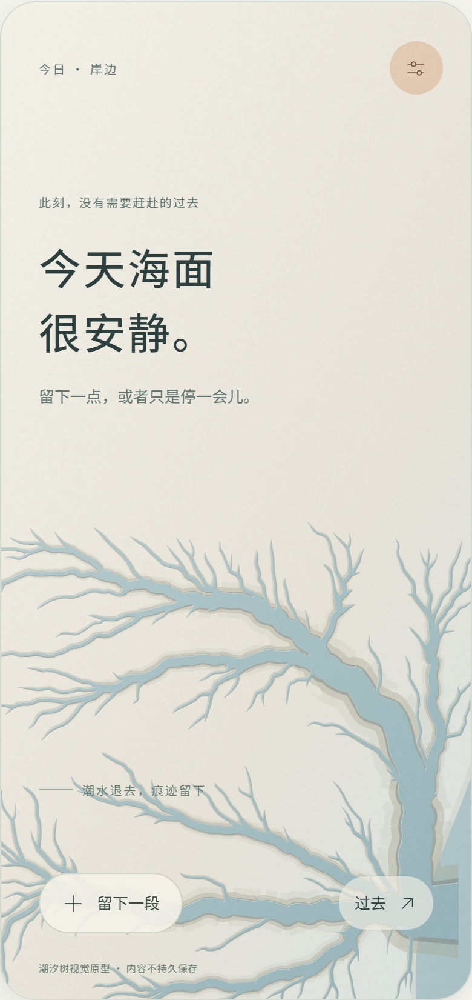
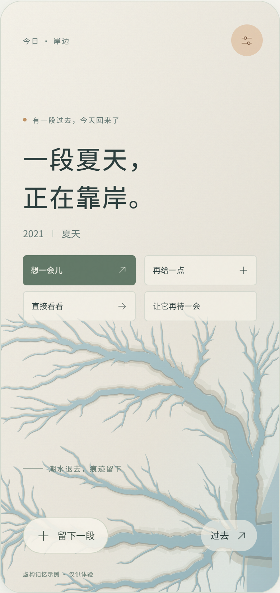
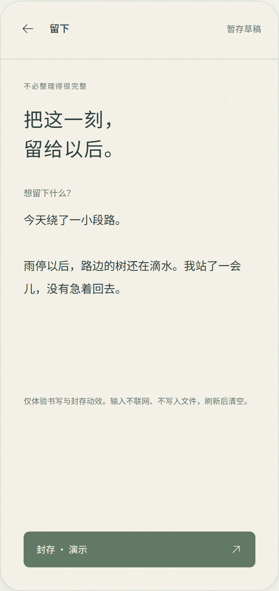
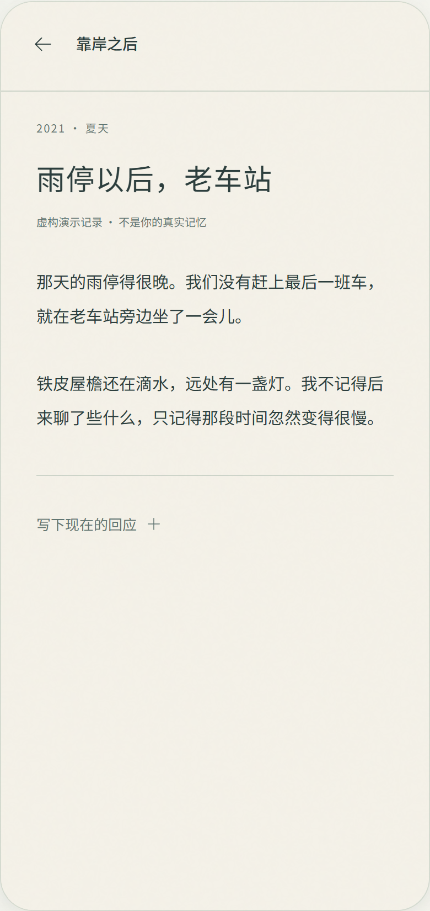
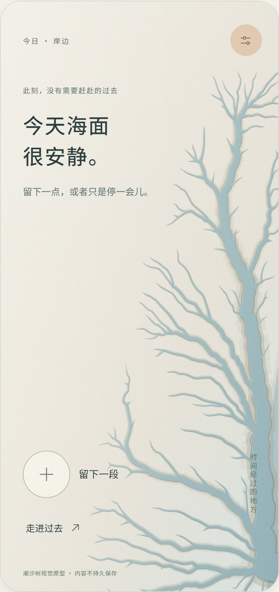
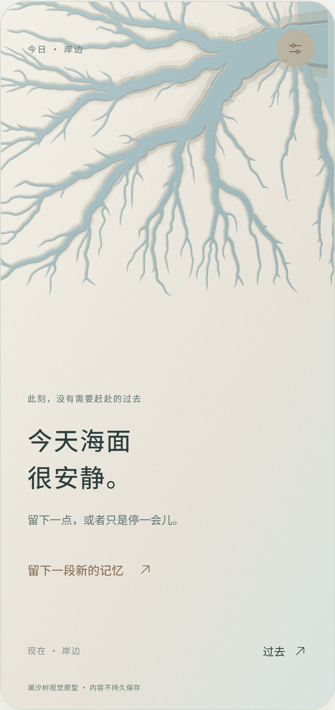
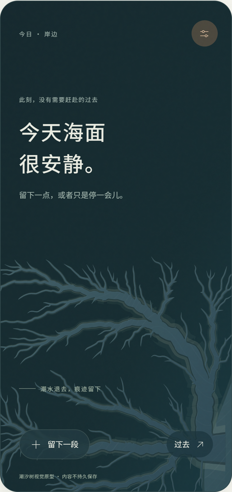

未完成_
ABSTRACT TIDAL LANDSCAPE抽象版 · UI 设计展示
设计方向 / 机制抽象 · 留白 · 地貌隐喻
把时间，转译为潮沟。
暖沙白与雾蓝灰构成安静的岸边。
潮水退去，记忆在留白中重新显露。
01岸边 / 首页 · A 横向潮滩

02靠岸 / 记忆出现

没有必须完成的任务。
03留下 / 书写

再选择封存。
04重逢 / 阅读

承载过去和现在的回应。
色彩与材质PALETTE / MATTE SURFACES
暖沙白
#F4F1E8雾蓝灰
#B7CDD0苔灰绿
#627867暖砂色
#C5936B深灰青
#2B3D3C交互叙事INTERACTION INTENT
满海→退潮→岸边→重逢
微动限制在水域；文字与操作保持稳定。
地形固定，退潮显露，不表现树枝生长。
构图探索原型局部 · 三种构图与深海模式


